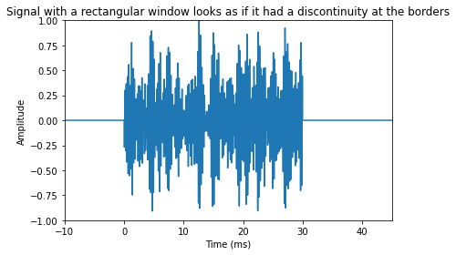
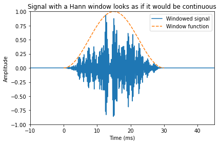
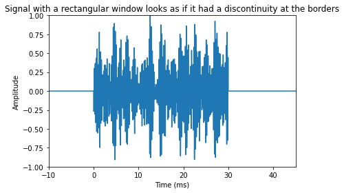
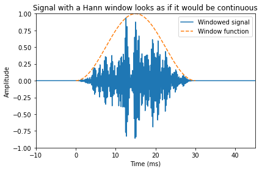
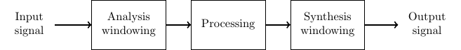
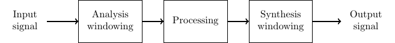

Windowing
Contents
3.4. Windowing¶

A spoken sentence is a sequence of phonemes. Speech signals are thus time-variant in character. To extract information from a signal, we must therefore split the signal into sufficiently short segments, such that, heuristically speaking, each segment contains only one phoneme. In other words, we want to extract segments which are short enough that the properties of the speech signal does not have time change within that segment.
Windowing is a classical method in signal processing and it refers to splitting the input signal into temporal segments. The borders of segments are then visible as discontinuities, which are incongruent with the real-world signal. To reduce the impact of segmenting on the statistical properties of the signal, we apply windowing to the temporal segments. Windowing functions are smooth functions which go to zero at the borders. By multiplying the input signal with a window function, the windowing function also goes to zero at the border such that the discontinuity at the border becomes invisible. Windowing does thus change the signal, but the change is designed such that its effect on signal statistics is minimized.
import numpy as np
import matplotlib.pyplot as plt
from scipy.io import wavfile
# read from storage
filename = 'sounds/test.wav'
fs, data = wavfile.read(filename)
window_length_ms = 30
window_length = int(np.round(fs*window_length_ms/1000))
n = np.linspace(0.5,window_length-0.5,num=window_length)
# windowing function
windowing_fn = np.sin(np.pi*n/window_length)**2 # sine-window
datawin = data[38000:(38000+window_length)]
datawin = datawin/np.max(np.abs(datawin)) # normalize
plt.plot(n*1000/fs,datawin)
plt.xlabel('Time (ms)')
plt.ylabel('Amplitude')
plt.title('A window of a signal without a windowing function (i.e. rectangular window)')
plt.axis([-10.,45.,-1.,1.])
plt.tight_layout()
plt.show()
nx = np.concatenate(([-1000,0.],n,[window_length,window_length+1000]))
datax = np.concatenate(([0.,0.],datawin,[0.,0.]))
plt.plot(nx*1000/fs,datax)
plt.xlabel('Time (ms)')
plt.ylabel('Amplitude')
plt.title('Signal with a rectangular window looks as if it had a discontinuity at the borders')
plt.axis([-10.,45.,-1.,1.])
plt.tight_layout()
plt.show()
nx = np.concatenate(([-1000,0.],n,[window_length,window_length+1000]))
datax = np.concatenate(([0.,0.],datawin*windowing_fn,[0.,0.]))
plt.plot(nx*1000/fs,datax,label='Windowed signal')
plt.plot(n*1000/fs,windowing_fn,'--',label='Window function')
plt.legend()
plt.xlabel('Time (ms)')
plt.ylabel('Amplitude')
plt.title('Signal with a Hann window looks as if it would be continuous')
plt.axis([-10.,45.,-1.,1.])
plt.tight_layout()
plt.show()
 



3.4.1. Quick reference¶
There are two distinct applications of windowing with different requirements; 1) analysis and 2) processing. In analysis, we only care about extracting information as accurately as possible given computational constraints, while in processing applications, we in addition need the ability to recreate the signal from a sequence of windows.
3.4.1.1. Windowing for analysis applications¶
This is a classical signal processing topic covered by any basic book on signal processing. Here we therefore present only the very basics. Given an input signal \(x_k\), defined for all \(k\), and a windowing function \(w_k\), defined on a limited range \(k\in[0,L) \) we can extract a window of the signal as
A classical windowing function, the Hann-window \( w_n=\left[\sin\left(\pi n/L\right)\right]^2 \) is shown below.
The main optimization criteria in choosing windowing functions is spectral distortion. Namely, we would like that the windowed signal resembles the original signal as much as possible. However, since it is only a short sample, it cannot be exact. As windowing is multiplication in the time-domain (see above equation), it corresponds to convolution in the frequency domain. By looking at the spectrum of the windowing function, we can therefore determine how much spreading of peaks in the frequency will occur when we apply the windowing function.
import numpy as np
import matplotlib.pyplot as plt
# window parameters in milliseconds
window_length_ms = 30
fs = 16000
window_length = int(np.round(fs*window_length_ms/1000))
n = np.linspace(0.5,window_length-0.5,num=window_length)
# windowing function
windowing_fn = np.sin(np.pi*n/window_length)**2 # sine-window
plt.plot(n*1000/fs,windowing_fn)
plt.xlabel('Time (ms)')
plt.ylabel('Amplitude')
plt.title('A Hann-window of 30ms length')
plt.show()

3.4.1.2. Windowing for processing applications; Overlap-add¶
When we intend to modify the windowed signal with some processing, the most common approach is to use a technique known as overlap-add. As seen in the figure below, in overlap-add, we extract overlapping windows of the signal, apply some processing, and reconstruct by windowing a second time and then adding overlapping segments together.
An obvious requirement would then be that if the signal is not modified, that we could then reconstruct the original signal perfectly; known as the perfect reconstruction property. It is straightforward to demonstrate that perfect reconstruction is achieved if overlapping regions of the windowing function add up to unity. Note that here we need to take into account the windowing is applied twice. That is, we obtain perfect reconstruction if (Princen-Bradley criteria)
Here the squares follow from the fact that windows are applied twice. Note that subsequent windows are then at a distance of half \(L/2\) the length of the window.
A classical windowing function which follows the perfect reconstruction criteria is the half-sine window, which is actually the square root of the Hann-window. However, we have to here take special care that indices are defined correctly, such that the half-sine is defined as \( w_n=\sin\left(\pi (n+0.5)/L\right). \) Observe that the difference to the Hann-window is thus the absence of a square. It the follows that, after squaring, overlapping parts add up to unity.
The length of windows in the figure below is 30 ms, while the shift between windows is 15 ms. This is known as 50% overlap and it is the most common approach, though it is possible to design low-overlap windows (useful in low-delay applications). We can then observe that analysis of the first window requires that we the signal is at least 30 ms long. Analysis of each additional window then requires 15 ms more signal. That is, for analysis we have
However, for reconstruction, we see that we have perfect reconstruction only in the segment between 15 ms and 60 ms. That is, only those overlap areas are perfectly reconstructed, where we have access to both the left and right windows. For reconstruction we then have
 

3.4.2. Comprehensive description¶
Specifically, suppose \(x_k\) is the \(k\)th sample of the input signal. Let \(w_k\) be a windowing function (like the one in the figure below) such that $\( \begin{cases} w_k > 0 & k\in[0,L-1] \\ w_k = 0 & k < 0 \text{ and } k \geq L\\ w_k \rightarrow 0 & \text{near the borders}. \end{cases} \)\( The windowed signal of length \)L\( is then \)\( x'_k = w_k x_k. \)\( In classical signal processing, the main design criteria for choosing \)w_k$ are related to spectral resolution. Windowing causes undesirable spreading of frequency components into nearby frequencies and by choosing the windowing function, we can choose how much and how far such a components are spread.
import numpy as np
import matplotlib.pyplot as plt
# window parameters in milliseconds
window_length_ms = 30
fs = 16000
window_length = int(np.round(fs*window_length_ms/1000))
n = np.linspace(0.5,window_length-0.5,num=window_length)
# windowing function
windowing_fn = np.sin(np.pi*n/window_length)**2 # sine-window
plt.plot(n*1000/fs,windowing_fn)
plt.xlabel('Time (ms)')
plt.ylabel('Amplitude')
plt.title('A Hann-window $w_k$ of 30ms length')
plt.show()

In difference to classical signal analysis, speech processing applications have a range of additional requirements. Most importantly, speech processing applications are not only analyzing the signals, but their purpose is to reconstruct the (modified) signal. The figure on the right illustrates the process. If the signal is not modified, commonly, our objective is that the signal can be perfectly reconstructed from the sequence of windows. This is known as the perfect reconstruction property.
In other words, a transform is said to have perfect reconstruction if the original signal can be recovered perfectly from the transformed representation.
In application using windowing, perfect reconstruction is achieved with a process known as overlap-add (sometimes abbreviated as OLA).
The basic principle of overlap and add is to apply windowing in overlapping segments, such that when the windows are later added together, the original signal is recovered (see Figure below).
As a first approach, let us define window \(h\) as
Subsequent windows \(x_{k,h-1}\) and \(x_{k,h}\), then have non-zero portions which are overlapping (see figure) in the region \( k\in[Lh/2,\, L(h+1)/2) \) . When we add them together, we obtain
It follows that the reconstruction is exactly equal to the original \(x_{k,h-1} + x_{k,h}=x_k\), iff $\( w_{k+L/2} + w_{k} = 1,\qquad\text{for } k\in[0,\,L/2). \)$ An example of a window which satisfies this requirement is the raised cosine (or Hann) window, illustrated below and defined as
import numpy as np
import matplotlib.pyplot as plt
# window parameters in milliseconds
window_length_ms = 30
window_length = int(np.round(fs*window_length_ms/1000))
n = np.linspace(0.5,window_length-0.5,num=window_length)
# windowing function
windowing_fn = np.sin(np.pi*n/window_length)**2 # sine-window
plt.plot(n*1000/fs,windowing_fn)
plt.xlabel('Time (ms)')
plt.ylabel('Amplitude')
plt.title('A Hann-window $w_k$ of 30ms length')
plt.show()
Unfortunately, when applying the above windowing in a processing application, there is a problem. Suppose the windowed signal \(x_{k,h}\) is modified in some way, for example, the signal could be quantized and coded for transmission. The receiving device would then see a modified signal \( \hat x_{k,h} = x_{k,h} + e_{k,h} \) , where \(e_k,h\) is the modification applied to window \(h\) and \(e_{k,h}\) is non-zero only for \( k \in [ Lh/2, L(h+1)/2) \) . The reconstructed signal, for the windows \(h\) and \(h+1\), would then be (for \( k\in[Lh/2,\,L(h+1)/2) \) )
The reconstruction error is thus \(e_{k,h-1}+e_{k,h}\). The problem here is that the modifications, \(e_{k,h-1}\) and \(e_{k,h}\), appear here without windowing. Consequently, if the modifications \(e_{k,h}\) are non-zero near the window borders, the reconstruction will have discontinuities.
To avoid discontinuities for the modification parts \(e_{k,h}\), we need to apply windowing also on the output signal. We therefore apply windowing at both the input and output:
Input: \(x_k\)
Analysis windowing: \( x_{k,h} = w^{\text{in}}_{k-Lh/2} x_k. \)
Processing: \( \hat x_{k,h} = x_{k,h}+e_{k,h}. \)
Synthesis windowing: \( \hat x_{k,h}' = w^{\text{out}}_{k-Lh/2} \hat x_{k,h}. \)
Overlap-add for the region \( k\in[Lh/2,\,L(h+1)/2): \hat x'_k = \hat x_{k,h-1}'+\hat x_{k,h}'. \)
Output: \( \hat x'_k. \)
The input and output windows are further illustrated in the Figure on the right.
The output then has
We immediately observe that all output errors \(e_{k,h}\) have been multiplied with windowing functions, whereby discontinuities are avoided. Moreover, perfect reconstruction is achieved iff
This leaves us with the design task of two windowing functions, \( w^{\textrm{in}}_k \) and \( w^{\textrm{out}}_k \) .
To choose the output window, we can assume that the modifications to the signal \(e_{k,h}\) are uncorrelated white noise of zero mean and variance \( \sigma^2 \) . The output error energy is then (for \( k\in[0,\,L/2) \) )
Modulations in signal energy are perceptually undesirable, whereby we can require that
To simultaneously satisfy constraints on both input and output windows, we set \(w_k=w^{\text{in}}_{k}=w^{\text{out}}_{k}\), such that our only criteria is
This is known as the Princen-Bradley condition for overlapping windows.
Several windowing functions which satisfy the above criteria are known. In fact, from any window which satisfies the reconstruction criteria, we can obtain a window which satisfies the Princen-Bradley condition by taking the square root. For example, we have the half-sine window
and the Kaiser-Bessel-derived (KBD) window
where \(I_0()\) is the zeroth order modified Bessel function of the first kind and γ is a scalar scaling coefficient chosen such that Princen-Bradley holds.
import numpy as np
import matplotlib.pyplot as plt
from scipy.io import wavfile
# read from storage
filename = 'sounds/test.wav'
fs, data = wavfile.read(filename)
data = np.float64(data)
# window parameters in milliseconds
window_length_ms = 30
window_step_ms = window_length_ms/2
window_step = int(np.round(fs*window_step_ms/1000))
window_length = window_step*2
window_count = int(np.floor((data.shape[0]-window_length)/window_step)+1)
# windowing function
windowing_fn = np.sin(np.pi*np.linspace(0.5,window_length-0.5,num=window_length)/window_length) # half-sine window
n = np.linspace(0.5,window_length-0.5,num=window_length)
plt.plot(n/fs,windowing_fn)
plt.title('The Hann-window')
plt.xlabel('Time (s)')
plt.ylabel('Amplitude')
plt.show()
# Extract windows
window_matrix = np.zeros([window_length,window_count],dtype=np.float64)
for window_ix in range(window_count):
window_matrix[:,window_ix] = np.multiply(windowing_fn,data[window_ix*window_step+np.arange(window_length)])
# Reconstruct
data_reconstructed = np.zeros_like(data)
for window_ix in range(window_count):
data_reconstructed[window_ix*window_step + np.arange(window_length)] += window_matrix[:,window_ix]*windowing_fn
t = np.arange(0,np.float64(data.shape[0])/fs,1./fs)
plt.plot(t,data,label='Original')
plt.plot(t,data_reconstructed,label='Reconstructed')
plt.xlabel('Time (s)')
plt.ylabel('Amplitude')
plt.legend()
plt.title('Original and reconstructed signals')
plt.show()
plt.plot(t,data-data_reconstructed)
plt.xlabel('Time (s)')
plt.ylabel('Amplitude')
plt.title('Difference between original and reconstructed signals')
plt.show()


We see that the reconstruction is identical to the original, for the exception of the borders. In this example, we started windowing from the borders, such that the first window has only the right-hand side window in the overlap-region. Since the left window is missing, reconstruction does not give perfect output. The same happens at the end of the signal. In practice this is actually desirable, because now the reconstruction does not have discontinuities at its borders. However, if this reconstruction would be combined with other signals, then we would have to stitch their borders together.
3.4.2.1. CELP windowing¶
Another type of windowing which supports perfect reconstruction is applied in speech codecs using the code-excited linear prediction (CELP) paradigm. Here, temporal statistics of the signal are modeled with a predictive (IIR) filter and the filter residual is windowed with square windows. In practice, this approach works only with a computationally complex analysis-by-synthesis methodology, and it has not received much attention outside the speech coding community.
3.4.2.2. Conclusion¶
Windowing with overlap-add is a basic and commonly used tool in speech processing. It allows algorithms to modify sections of the signal such that the modifications do not cause discontinuities to the signal. A properly designed windowing for overlap-add does not in itself cause distortions and the original signal can be perfectly reconstructed from the windows. The only notable disadvantage of overlapping windowing is that overlaps cause redundancy, since information which appears in an overlap region between windows \(k\) and \(k+1\), will then always be included in computations in both window \(k\) and \(k+1\). Overlap-add processing can be modified to remove the redundancy, by projecting the overlap area into two orthogonal subspaces. Such methods are known as lapped transforms and are however beyond the scope of the current treatise.
In general, still, I would advise using perfect reconstruction methods in all speech processing applications (except coding applications where lapped transforms are preferred). The system is then deterministic in the sense that all modifications are due to the main processing algorithm and windowing will never cause surprising side-effects.